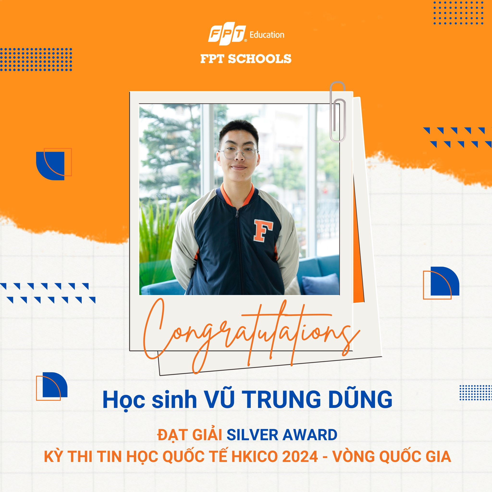
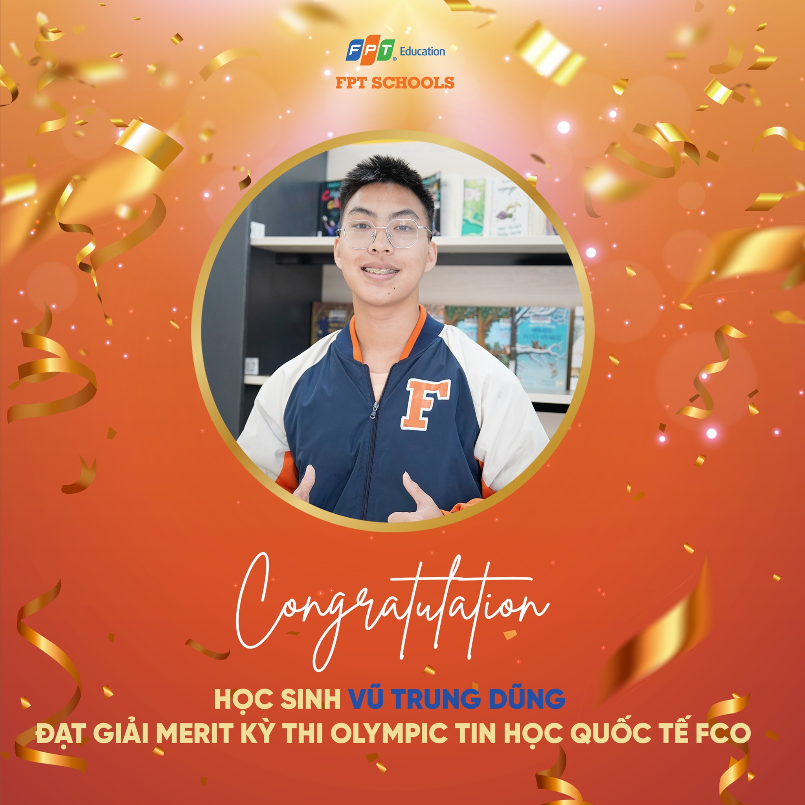
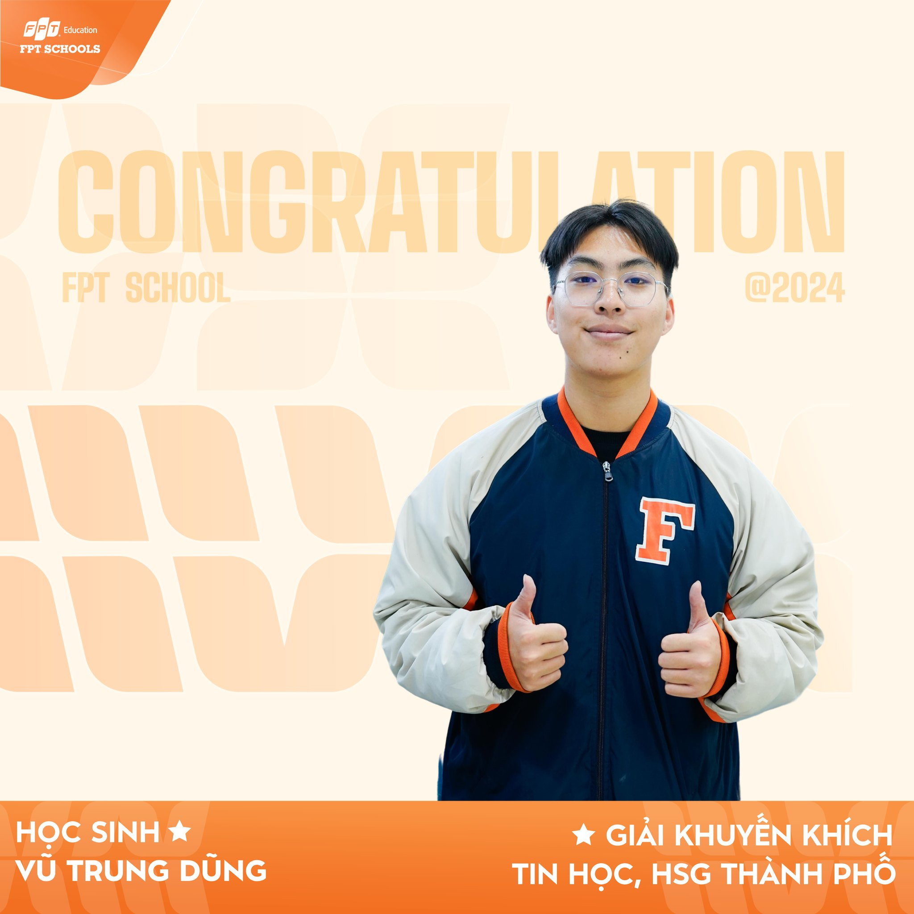

Informatics Achievements
My passion for computer science has been consistently reflected through my active participation in a wide range of informatics competitions. Over the past two years, I have challenged myself in both national and international arenas, earning several prestigious awards that highlight not only my technical ability but also my dedication and perseverance.
From earning Silver Awards at the Hong Kong International Computational Olympiad (HKICO), to pushing my limits in the Future Coder Olympiad (FCO), and finally securing a Merit Award in the highly competitive Citywide Informatics Competition for Excellent Students, each achievement has contributed significantly to my growth. These experiences have deepened my understanding of coding, strengthened my problem-solving mindset, and reaffirmed my commitment to pursuing a future in computer science and artificial intelligence.

🥈 Silver Awards – HKICO (National and International Rounds)
This achievement represents the culmination of a year-long journey in mastering Python through dedicated self-study and persistent practice. As I gradually built a strong foundation in programming, I gained the confidence to compete in the Hong Kong International Computational Olympiad (HKICO).
Receiving Silver Awards in both the national and international rounds was a significant milestone. It validated my abilities in computer science and sparked a deeper commitment to academic and competitive excellence in the field.
More than just a certificate, this award marked a turning point in my learning journey, serving as a bridge between my early interest in coding and the more intense academic challenges I would take on in Grade 12, including preparation for the national high school graduation exam.
`);">

🏅 Merit Award – FERMAT Computational Olympiad (FCO)
Building upon my achievements at HKICO, I sought to push my boundaries further by participating in the FERMAT Computational Olympiad (FCO). Entering the competition with confidence from prior experiences, I quickly realized that my current knowledge, while valuable, was not yet sufficient to attain a higher distinction.
Although I earned a Merit Award rather than the result I had initially aimed for, this experience proved invaluable. It helped me uncover specific areas in which my understanding was still limited and offered a clearer direction for future growth.
This turning point not only deepened my appreciation for the complexities of computer science but also reinforced my determination to continue learning and improving. It was a powerful reminder that setbacks can be catalysts for meaningful progress.
`);">

🏅 Merit Award – Citywide Informatics Competition for Excellent Students
This city-level contest for outstanding students represented a major academic milestone in my high school journey. Officially recognized by universities and scholarship programs, the competition was not only a measure of skill but also a gateway to future academic opportunities.
Despite its significance, I faced an unexpected challenge: due to a miscommunication at school, I was informed of my nomination only two weeks before the exam. Nevertheless, I refused to let this setback define my performance. I devoted myself entirely to a period of intense preparation, maximizing every hour available.
During the three-hour examination, I remained focused and determined. Although I narrowly missed the third prize by just one point, I was proud to receive a Merit Award. More importantly, the experience taught me valuable lessons about resilience, mental fortitude, and the ability to perform under pressure—qualities that continue to shape my academic and personal growth.
`);">
🌟 Reflections and Aspirations
Each certificate and achievement in this portfolio tells a story — not just of success, but of growth, resilience, and self-discovery. From the early days of adapting to a new environment to the moments of academic excellence and leadership, I have constantly strived to challenge myself and make meaningful contributions to my school community.
What drives me is not merely the pursuit of awards, but the desire to continuously improve, learn from every experience, and turn setbacks into motivation. As I look toward the future, I am committed to deepening my knowledge in computer science, especially in the field of cybersecurity and artificial intelligence. I believe that these achievements have laid a solid foundation for me to thrive in university and beyond.